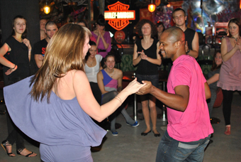
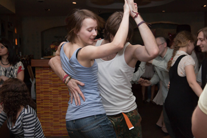
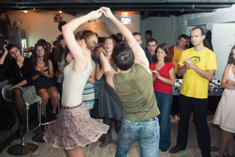
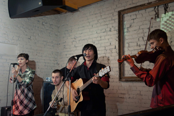
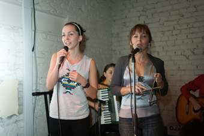

Танцевать!
Перед зимой, друзья, надо запастись впрок теплом и солнцем. Питер учит как надо – в последние осенние выходные здесь прошел семинар по forro с отличным учителем и танцором из Рио – Marinho Braz.
Первые шаги (в прямом смысле) форро мы делали лет пять назад в маленькой комнатушке клуба «Лидер» — кто был, вспомните и расплачьтесь. Тогда из всей музыки форро была доступной разве что группа Falamansa, а основными поставщиками, вдохновителями и учителями форро были Артем и Николай, которых мы сегодня знаем и любим как Axe и Linguado. Ребята научили нас самым простым шагам, и на первой же форро-вечеринке в Финляндии мы уже проверяли свои познания с местными форрозейросами под живое форро. Как же мы тогда завидовали финнам! Как же мы хотели так же танцевать у себя, под живое исполнение уже таких любимых песен.
И вот смотрите-ка – мечты-то исполняются! Во время семинара несколько вечеров подряд на каждой вечеринке зал полон. И это уже не топчущиеся на месте парочки – это уже отличные форрозейрос, знающие сложные шаги, провороты, кручения, поддержки. Парни стали решительными и сильными. Они настоящие капитаны – ведут девушек уверенно и смело по волнам форро (а форро и правда качает как море – проверьте в следующий раз!), прижимают к себе крепко, направляют в нужную сторону, держат ритм и целуют руку после танца. Вы не смейтесь – раньше поцеловать девушку в щеку на прощание после тренировки было абсолютно impossible.
А девушки… Мы перестали быть просто „камарадос в тренировочных штанах“. Мы стали носить платья и юбки на вечеринки, чтобы они кокетливо развевались во время танца. Мы научились расслабляться, влюбляться и отдаваться, мы стали позволять себя вести. Мы забыли про коня на скаку и горящие избы – и слава Богу. На роде мы можем дать пяткой в нос, но на вечеринке форро мы будем слабыми и нежными. Мы способны влюбиться в партнера без памяти ровно на то время, пока будет звучать песня форро – такое вот волшебство этих бразильских волн.
Кстати, форро в Питере теперь звучит и вживую – ребята из Mundo Capoeira собрали «кружок по интересам» и создали форро-бэнд «Nao Proibidos». Исключительно по своей инициативе они репетируют в студии, подбирают ноты к любимым песням, выискивают настоящие форрошные жемчужинки и регулярно радуют нас живыми выступлениями. К слову, на одном из таких выступлений состоялась и премьера первой собственной песни форро-бэнда „Nao Proibidos“ от Graduado Violino. Идейный вдохновитель питерского форро-движения Articulado недавно повеселил нас хитом «Самара-городок», который удивительно легко лег на мотив форро.

Приятно видеть, что питерская движуха вдохновляет соседей – подобные форро-проекты развиваются в Москве и Киеве, так что скоро форро-эвенты можно будем рекламировать наравне с мероприятиями капоэйры. Еще более приятно видеть, что люди, которые по каким-то причинам уходят из капоэйры, находят себя в форро, достигают своих успехов там и остаются все в одной компании.
И самое приятное – форро не имеет лейбла и логотипа. На занятиях по форро тебя не спрашивают, в какой группе капоэйры ты занимаешься и знаешь ли ты вообще о капоэйре. На вечеринках форро встречаются капоэйристы из всех групп, и это то, что, пусть вне капоэйры, но помогает нам объединяться.
Так что vamos dancar!
Информация о занятиях и вечеринках по форро доступна. Двери открыты!
И да, вы же понимаете, что professor Marinho Braz – всего лишь информационный повод для того, чтобы написать на capoeira.in влюбленности пост))))